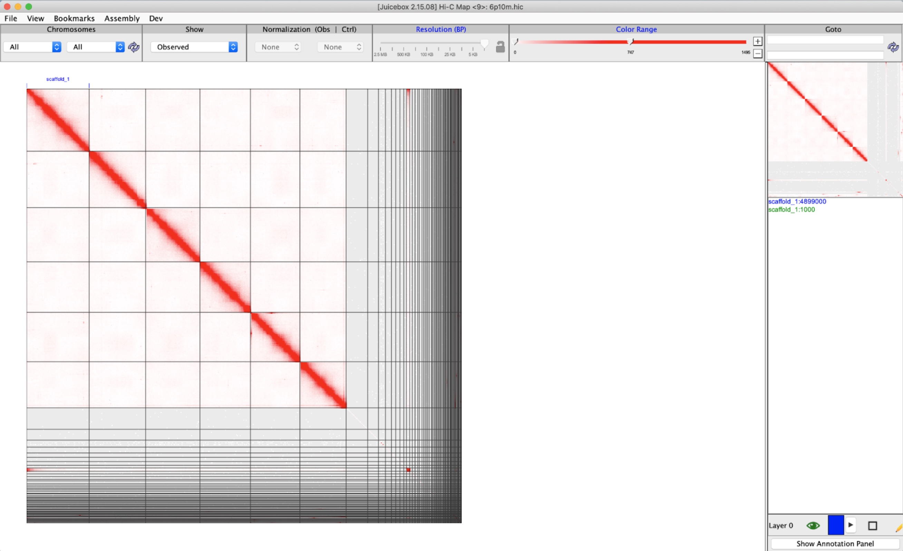

Chapter 9 Scaffolding using HiC
9.1 Introduction
In the section on genome assessment, we separated the high-probability bacteria contigs from the eukarya contigs, and then ran purge_dups on the eukarya contigs. We were left with a very high contiguity nematode genome assembly.
In this exercise we will use our best assembly from the previous step and paired Illumina Hi-C reads to scaffold the already very good assembly into chromosome sized scaffolds.
9.2 Set up
Open a new terminal and load the Hi-C environment:
. usehicCreate a new directory, change into it, and link to the files we need:
mkdir -p ~/eukaryote_assembly/5-scaffolding
cd ~/eukaryote_assembly/5-scaffoldingLink to the purged eukaryote-only contigs:
ln -s ~/eukaryote_assembly/3-assessment/eukarya_ERR7979900_hifiasm.bp.p_ctg.fa_purged.faLink to the paired Hi-C reads. The original files were downloaded from https://www.ebi.ac.uk/ena/browser/view/ERR5967937 but were very large and would have taken too long for this exercise, so we sampled the first 10 million reads:
ln -s /pub14/tea/nsc206/NEOF/Euk_assembly/data/test10m1.fq.gz
ln -s /pub14/tea/nsc206/NEOF/Euk_assembly/data/test10m2.fq.gz9.3 Map the Hi-C reads to the genome assembly
As in the previous steps, we're going to use BASH variables so that in future you can just copy the commands:
REF=eukarya_ERR7979900_hifiasm.bp.p_ctg.fa_purged.fa
FASTQ1=test10m1.fq.gz
FASTQ2=test10m2.fq.gz
PREFIX=purged10m
CPU=16
MEM=100GIndex the reference and map the reads. The bwa index command will take a minute or so to run. Make sure to wait for it to finish before entering the second and third commands:
bwa index $REF
samtools faidx $REF
bwa mem -t $CPU $REF $FASTQ1 $FASTQ2 | \
samtools view -b - > $PREFIX.bamThis will take a few minutes to run. When it's finished run the actual scaffolding step using YAHS (Yet Another Hi-C Scaffolder)
yahs $REF $PREFIX.bam -o $PREFIX9.4 Visualise the scaffolding data in Juicer
Juicer and Juicebox are tools that allow you to visualise scaffolds and manipulate them.
These yahs scripts create a file ready for juicer:
juicer pre ${PREFIX}.bin ${PREFIX}_scaffolds_final.agp $REF.fai | \
sort -k2,2d -k6,6d --parallel=$CPU -S$MEM | \
awk 'NF' > \
${PREFIX}_alignments_sorted.txt
awk '/^>/{if (l!="") print l; printf "%s\t", $1; l=0; next}{l+=length($0)}END{print l}' \
${PREFIX}_scaffolds_final.fa | \
sed "s/>//" > \
${PREFIX}_scaffolds_final.fa_chromosome_sizes.txtNow run juicer_tools to create a file that can be seen in Juicebox:
java -jar -Xmx$MEM /pub14/tea/nsc206/jars/juicebox/juicer_tools_2.15.08.jar \
pre --threads $CPU \
${PREFIX}_alignments_sorted.txt \
${PREFIX}.hic \
${PREFIX}_scaffolds_final.fa_chromosome_sizes.txtThis step takes ~10 minutes to run. When it's finished launch juicebox:
java -jar /pub14/tea/nsc206/jars/juicebox/juicebox_2.15.08.jarGo to the top menu File -> Open, click on 'Local', navigate to the your ~/eukaryote_assembly/5-scaffolding directory and load purged10m.hic
You should see something that looks like this:  This figure clearly shows that there are 6 major scaffolds (and a few tiny ones at the end), and we know that Oscheius onirici has 6 chromosomes.